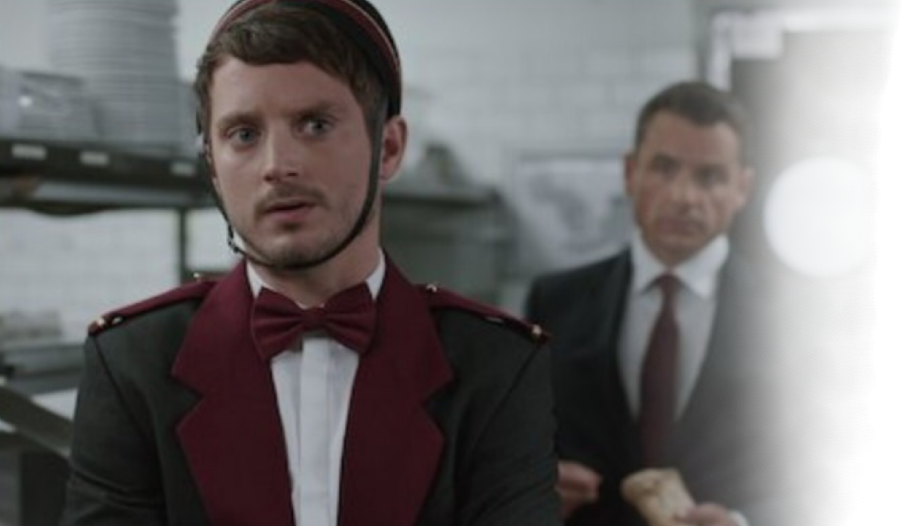

"AS COISAS ACONTECEM QUANDO ACONTECEM"


LIVRO
“Um colossal épico cômico musical romântico policial de horror sobre viagens no tempo, fantasmas e detetives.”

.

1ª TEMPORADA
“Todd Brotzman acaba no meio de uma investigação sobrenatural envolvendo assassinato, sequestro, animais de estimação e o estranho detetive Dirk Gently.”
.

2ª TEMPORADA
“Dirk passa por vários teste inúteis. A busca de Todd e Farah por Dirk os leva a Bergsberg, Montana, onde Bart também aparece.”